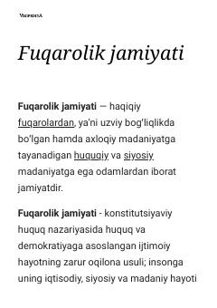

FJFuqarolik jamiyatining huquqiy asoslari va tarixiy rivojlanishiga bag'ishlangan ma'lumot.
Mazkur matn fuqarolik jamiyatining tushunchasi, uning huquqiy va demokratik asoslari hamda tarixiy shakllanish jarayonlari haqida ma'lumot beradi. Shuningdek, jamiyat va davlat o'rtasidagi munosabatlar, inson huquqlari va qonun ustuvorligi masalalari yoritilgan.